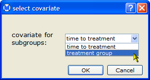
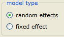
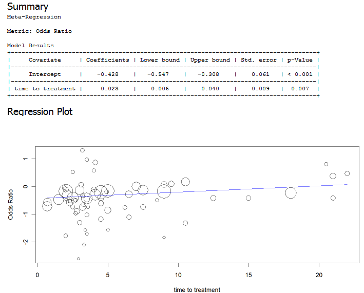

This section provides an example that illustrates how to perform a meta-regression. To try the example for yourself, do the following steps:


This displays a regression summary and plot shown below. Note: The regression plot is only displayed if you select exactly one continuous covariate, and no factor covariates. Otherwise, only the summary is displayed.

| Adding a Covariate | Cumulative Meta-Analysis | |